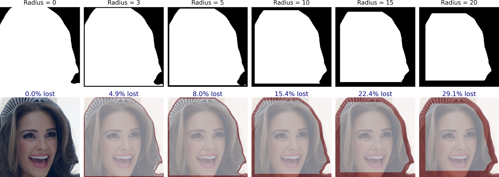
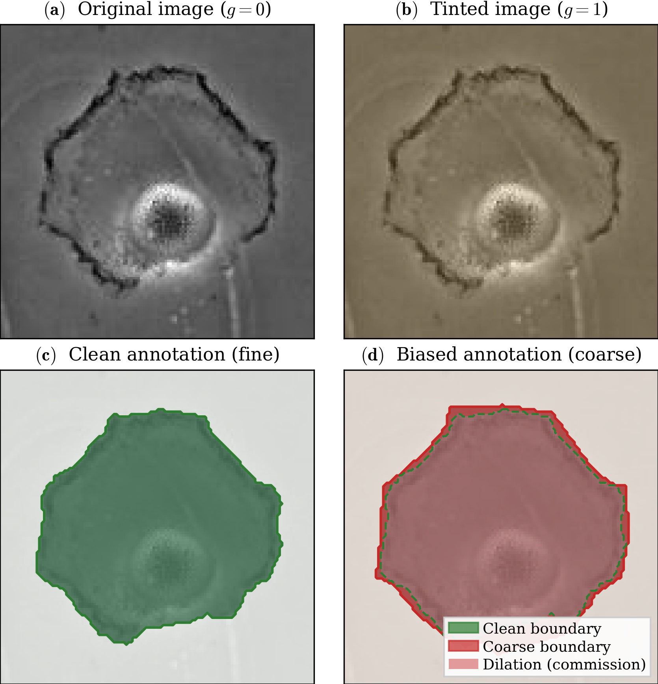
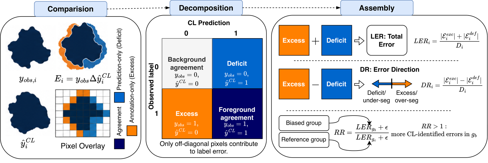
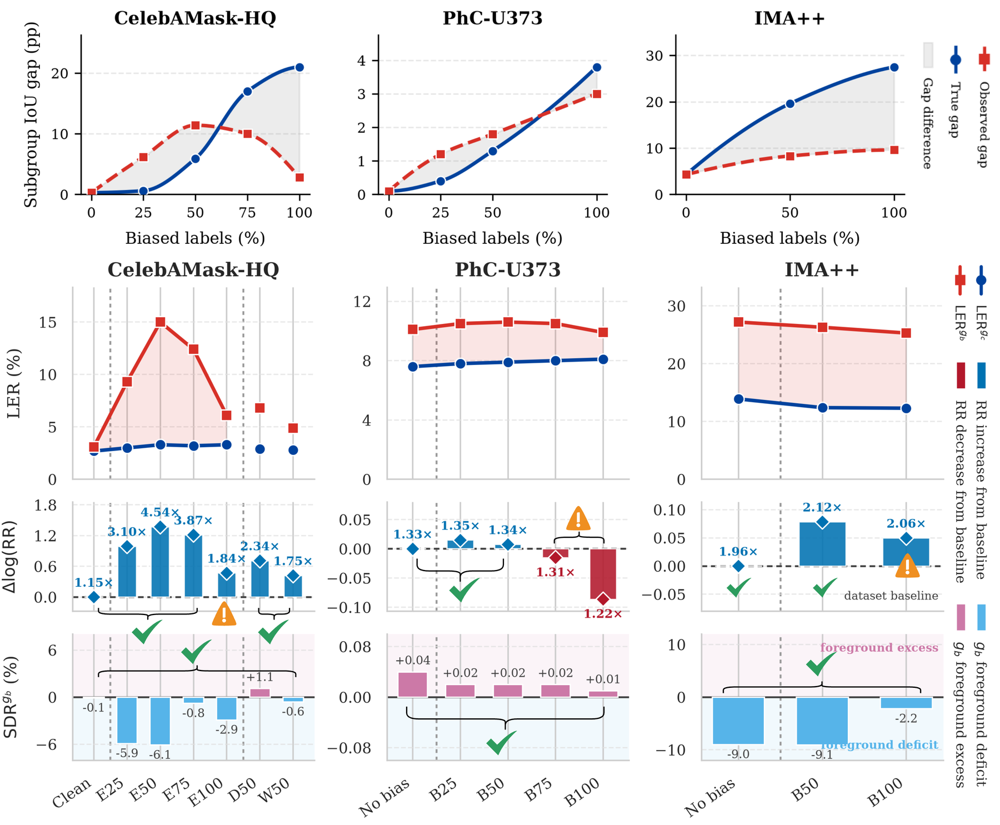
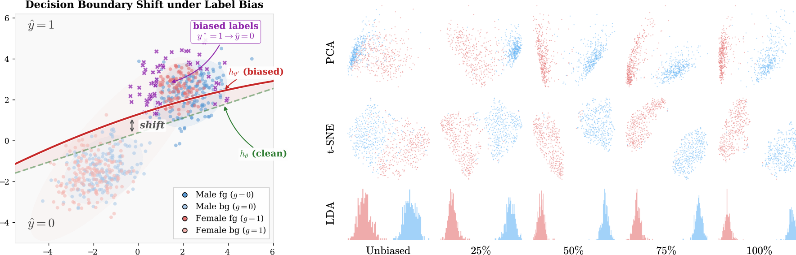

Eroded mask; lost foreground in red.
Bloated mask; added foreground in orange.
Boundary distortion; excess and deficit.





Preprint: arXiv:2605.06891. Code, splits, configs and seeds: github.com/ADE-17/label-bias-segmentation.
@misc{parikh2026fairnesslabelbiasimage,
title={Towards Fairness under Label Bias in Image Segmentation: Impact, Measurement and Mitigation},
author={Aditya Parikh and Stella Frank and Sneha Das and Aasa Feragen},
year={2026},
eprint={2605.06891},
archivePrefix={arXiv},
primaryClass={cs.CV},
url={https://arxiv.org/abs/2605.06891},
}